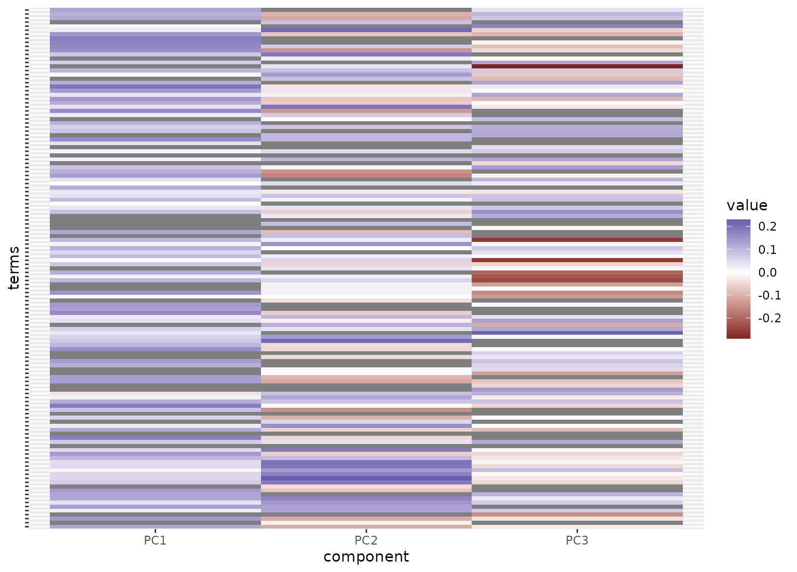

step_pca_sparse() creates a specification of a recipe step that will
convert numeric data into one or more principal components that can have some
zero coefficients.
Arguments
- recipe
A recipe object. The step will be added to the sequence of operations for this recipe.
- ...
One or more selector functions to choose which variables will be used to compute the components. See recipes::selections for more details. For the
tidymethod, these are not currently used.- role
For model terms created by this step, what analysis role should they be assigned? By default, the function assumes that the new principal component columns created by the original variables will be used as predictors in a model.
- trained
A logical to indicate if the quantities for preprocessing have been estimated.
- num_comp
The number of components to retain as new predictors. If
num_compis greater than the number of columns or the number of possible components, a smaller value will be used. Ifnum_comp = 0is set then no transformation is done and selected variables will stay unchanged, regardless of the value ofkeep_original_cols.- predictor_prop
The maximum number of original predictors that can have non-zero coefficients for each PCA component (via regularization).
- options
A list of options to the default method for
irlba::ssvd().- res
The rotation matrix once this preprocessing step has be trained by recipes::prep.
- prefix
A character string that will be the prefix to the resulting new variables. See notes below.
- keep_original_cols
A logical to keep the original variables in the output. Defaults to
FALSE.- skip
A logical. Should the step be skipped when the recipe is baked by
recipes::bake()? While all operations are baked whenrecipes::prep()is run, some operations may not be able to be conducted on new data (e.g. processing the outcome variable(s)). Care should be taken when usingskip = TRUEas it may affect the computations for subsequent operations- id
A character string that is unique to this step to identify it.
Value
An updated version of recipe with the new step added to the
sequence of existing steps (if any). For the tidy method, a tibble with
columns terms (the selectors or variables selected), value (the
loading), and component.
Details
The irlba package is required for this step. If it is not installed, the
user will be prompted to do so when the step is defined. The irlba::ssvd()
function is used to encourage sparsity; that documentation has details about
this method.
The argument num_comp controls the number of components that will be retained
(the original variables that are used to derive the components are removed from
the data). The new components will have names that begin with prefix and a
sequence of numbers. The variable names are padded with zeros. For example, if
num_comp < 10, their names will be PC1 - PC9. If num_comp = 101,
the names would be PC1 - PC101.
Tidying
When you tidy() this step, a tibble is returned with
columns terms, value, component, and id:
- terms
character, the selectors or variables selected
- value
numeric, variable loading
- component
character, principle component
- id
character, id of this step
Tuning Parameters
This step has 2 tuning parameters:
num_comp: # Components (type: integer, default: 5)predictor_prop: Proportion of Predictors (type: double, default: 1)
Examples
library(recipes)
library(ggplot2)
data(ad_data, package = "modeldata")
ad_rec <-
recipe(Class ~ ., data = ad_data) %>%
step_zv(all_predictors()) %>%
step_YeoJohnson(all_numeric_predictors()) %>%
step_normalize(all_numeric_predictors()) %>%
step_pca_sparse(
all_numeric_predictors(),
predictor_prop = 0.75,
num_comp = 3,
id = "sparse pca"
) %>%
prep()
tidy(ad_rec, id = "sparse pca") %>%
mutate(value = ifelse(value == 0, NA, value)) %>%
ggplot(aes(x = component, y = terms, fill = value)) +
geom_tile() +
scale_fill_gradient2() +
theme(axis.text.y = element_blank())
